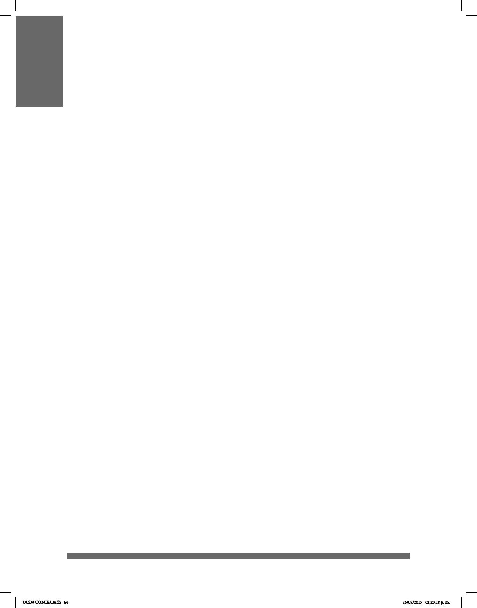

64
CLASIFICADORES
Un clasificador define las características sobresalientes de un objeto. Son señas
que resultan de la combinación de dos o más morfemas: uno que indica la clase de
nombre y otro que consiste en los rasgos del objeto.
En la Lengua de Señas Mexicana (LSM) existen formas de configuración manual
(CM), las cuales son estrategias que se usan para describir las características
inherentes y sobresalientes de un objeto como su material, forma, consistencia,
tamaño, ubicación, orden y número. Al describir objetos en la lengua de señas
configuramos y delineamos la forma de los mismos con el fin de ampliar la
comprensión del mensaje.
Cuando no existe la seña para denominar ciertos objetos que son redondos,
planos, personas con diferentes posiciones, animales, etc., se utilizan las manos para
describirlos y, dependiendo de su tamaño, la seña se agranda o acorta. Un
clasificador define uno o varios rasgos más característicos de un objeto de
manera precisa, por ejemplo, si es animado, humano, si tiene movilidad, si son planos,
redondos, etc.
En los clasificadores de predicado, la configuración manual aporta información
con respecto a la clase de objeto sobre la cual se está predicando o sobre su
pertenencia a clases semánticas abstractas al momento de combinarlas con un
morfema o raíz de movimiento. Las raíces de movimiento (o raíces espacio
locativas) se clasifican en: procesos o movimiento, estativo-descriptiva y contacto.
Por su parte, los morfemas clasificadores se agrupan en: clasificadores de entidad,
de superficie, de profundidad y anchura, de extensión o límite, de perímetro y de
instrumento.
DLSM COMISA.indb 64 25/09/2017 02:20:18 p. m.